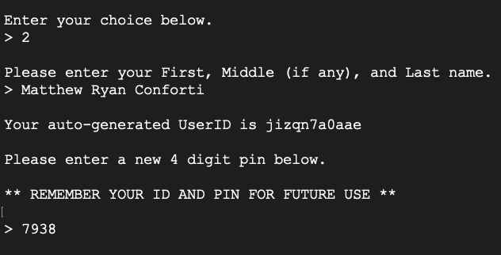
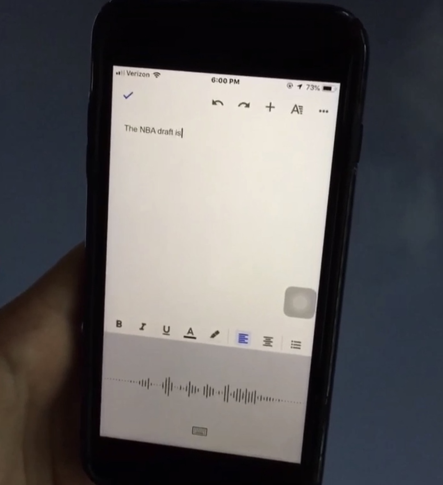
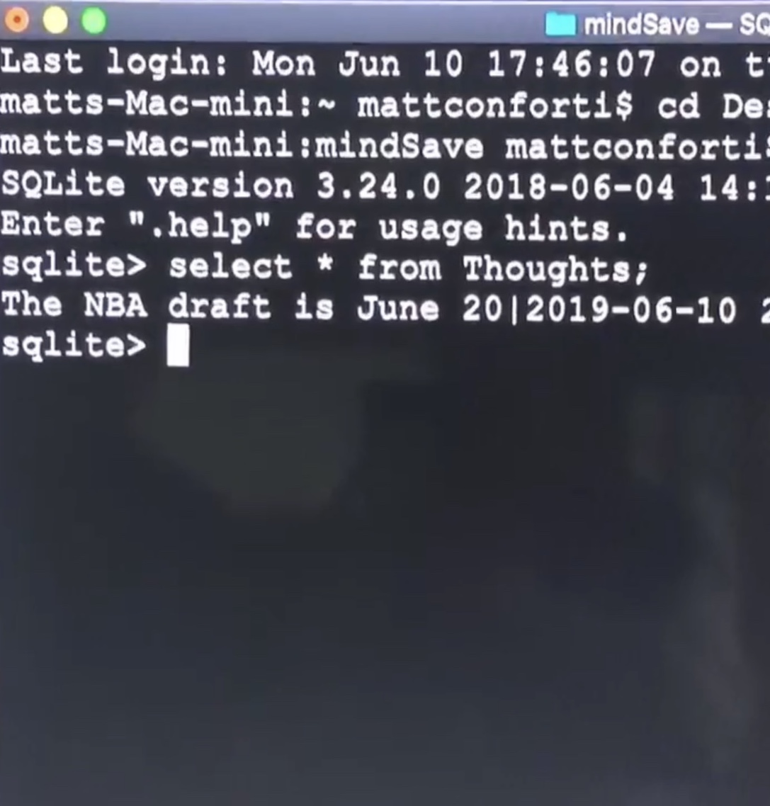
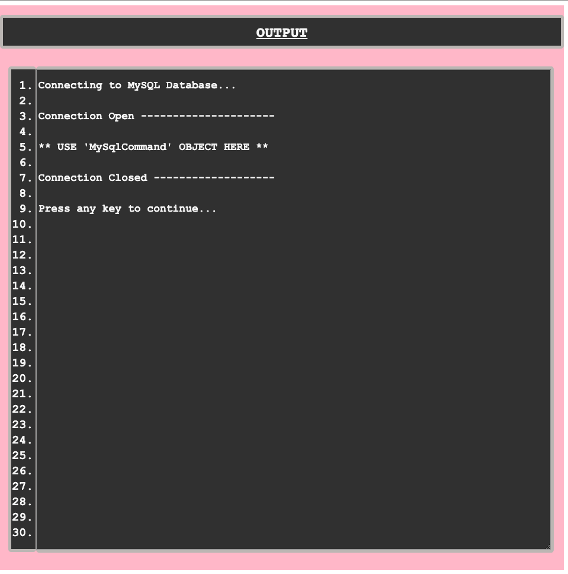

Hello there! My name is Matt Conforti. Welcome to my 'about-me' page!
This is a page designed solely using HTML and CSS.
Here, you can learn a bit about me, what I do,
and see some of the work I've done.
Don't
hesitate to reach out to me with questions or inquiries of any kind.
My contact info can be found below at the very bottom of the page.
Thanks for visiting my site!
I am a 22 year old
programmer currently based out of Royal Oak, Michigan.
My passion for Computer Science was bred at
Canisius College in Buffalo, New York.
There, I recieved my Bachelor of Science
Degree for CS, as well as the Computer Science Department
Excellence in Academics Award.
Although my undergraduate studies have concluded,
I constantly continue to learn and better myself.
I strive to enhance my computer skills and improve myself as a person day after day.
Computer programming is not just a hobby of mine or something to pay the bills,
it is a part of me and my lifestyle.
Nowadays, I am self-teaching C# and solidifying the knowledge I have
gained over my still-young computing career.
I enjoy spending my
free time designing and implementing personal projects
(some of which you can see below),
as well as a host of other
activities that keep my mind and body sharp.
These include weight
training, strategy games, videogames, basketball, brainteasers, etc.
I believe it is important to have many hobbies,
but I am most passionate
about computing and the creative nature of writing code using a programming language.
This past summer, I started a personal Computer Science blog on Instagram,
which can be found at instagram.com/comp_21.
More recently however, I have started a YouTube channel, called
comp_21_YT.
Here, I will post bi-weekly coding videos and tutorials.
Please click the link if you are interested! Thanks for taking the time.
Amongst a mix of new and old projects,
these are some of the things I've particularly
enjoyed working on:
mattsAtm - an ATM simulator using C#

mindSave - Python program to save speech-to-text into a database


codeDisplay - web-page to display code with a clean and simple look

You can find source code to public projects at github.com/mattconforti.